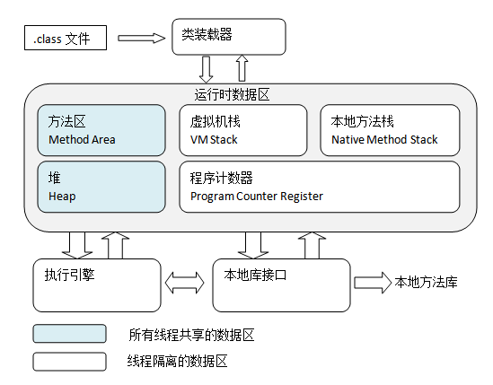

每一个运行的Java程序都是一个JVM实例，它随程序的启动而产生，对程序的结束而消亡。
JVM的内部体系结构
JVM在执行Java程序的过程中，每个Java虚拟机会有一个类装载器子系统(Class Loader System)，它会根据给定的全限定名来装入类型。每个Java虚拟机都有一个执行引擎，它负责执行那些包含在被装载类的方法中的指令。当JVM运行一个程序时，它需要内存来存储执行所需要的指令和数据，包括字节码，从已装载的class文件中得到的其他信息，程序创建的对象，传递给方法的参数，返回值，局部变量，以及运算的中间结果等。JVM会将这些内容划分为几个运行时数据区域，每个区域都有各自的用途，以及创建和销毁时间。JVM所管理的内存包括以下几个运行时数据区域，其中，方法区和堆是所有线程共享的，而Java栈，程序计数器和本地方法栈是每个线程单独使用的：

我们比较关心的还是运行时内存区域，主要包括以下几个方面：
方法区
方法区用于存储被虚拟机加载的class文件所包含的类型、常量、静态变量、即时编译器编译后的代码等数据。方法区又可以成为Non-Heap，目的是与Java堆区分开来。
Java堆
Java堆（Java heap）是Java虚拟机存放程序运行时所创建的对象的区域，是Java虚拟机所管理的内存中最大的一块，是被所有线程共享的一块内存区域，在虚拟机启动时创建的，所有的对象实例以及数组都要在堆上分配。
Java堆是垃圾收集器管理的主要区域，因此很多时候也被称作“GC堆”（Garbage Collected Head），从垃圾回收的角度看，现在的垃圾收集器基本上都采用分代收集算法，所以Java堆中可以细分为新生代和老年代；再细致一点有Eden空间、From Survivor空间，To Survivor空间等。从内存分配的角度来看，线程共享的Java堆中可能划分出多个线程私有的分配缓冲区（Thread Local Allocation Buffer），无论如何划分，都与存放内容无关，无论哪个区域，存储的都仍然是对象实例。
根据Java虚拟机规范，Java堆可以处于物理上不连续的内存空间中，只要逻辑上是连续的即可，既可以是固定大小的，也可以是可扩展的，不过当前的虚拟机都是按照可扩展来实现的（通过-xmx和-xms控制）。如果在堆中没有内存完成实例分配，并且堆也无法再扩展时，会跑出OutOfMemoryError异常；
程序计数器
程序计数器是一块较小的内存空间，可以看做是当前线程所执行的字节码的行号指示器，字节码解释器工作时就是通过改变这个计数器的值来选取下一条需要执行的字节码指令，分支，循环，跳转，异常处理，线程恢复等基础功能都需要依赖这个计数器来完成。
因为Java虚拟机的多线程是通过线程轮流切换并分配处理器执行时间的方式来实现的，在任何一个确定的时刻，一个处理器（一个内核）都会执行一条线程中的指令。因此，为了线程切换后都能恢复到正确的执行位置，每条线程都需要有一个独立的程序计数器，各条线程之间计数器互不影响，独立存储，是“线程私有的”内存。
如果程序正在执行的是一个Java方法，这个计数器记录的是正在执行的虚拟机字节码指令的地址；如果执行的是Native方法，这个计数器值则为空（Undefined）;
虚拟机栈
与程序计数器一样，虚拟机栈也是线程私有的，其生命周期与线程相同。虚拟机栈描述的是Java方法执行的内存模型：每个方法在执行的同时会创建一个栈帧（Stack Frame），用于存储局部变量表，操作数栈，动态链接，方法出口等信息。每一个方法从调用直至执行完成的过程，都对应着一个栈帧在虚拟机中入栈到出栈的过程。
在Java虚拟机中，对于这区域规定了两种异常状况：如果线程请求的栈深度大于虚拟机所允许的深度，将抛出StackOverflowError异常，如果虚拟机栈可以动态扩展，在扩展时无法申请到足够的内存时，会抛出OutOfMemoryError异常；
本地方法栈
本地方法栈与虚拟机栈所发挥的作用是非常相似的，它们之间的区别是虚拟机栈为虚拟机执行Java服务，而本地方法栈则是为虚拟机使用到的Native方法服务。与虚拟机栈一样，本地方法栈区域也会抛出StackOverflowError和OutOfMemoryError异常；
总结
Java虚拟机的体系结构主要由类装载系统，运行时数据区和执行引擎组成，其中运行时数据区是JVM的核心，包括方法区、堆、java栈、程序计数器和本地方法栈，其中方法区和堆是所有线程共享的内存区域